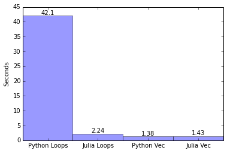

Monte Carlo Simulations of Bitcoin Options
I was introduced to Julia recently after hearing of Stefan Karpinski while attending HackerSchool. Julia is marketed as a super fast high performance scientific computing language that can reach speeds close to native C code. After attending a conference for Python quants in NYC and heard Dr. Yves J. Hilpisch speak on the speed of Python for financial analytics I decided to put Julia up against the python/numpy stack.
This isn’t so much a boxing match between Julia and Python but rather an exercise in solving the same problem in two languages and comparing them. I’ve attached relevant ipython/ijulia code files below so you can play with the code if you’d like.
Monty Python Bitcoin what
I’ll try to give a short explanation of everything involved. Basically I’m going to solve the classic options pricing problem with Monte Carlo Simulations in both Julia and Python and compare and contrast the approach taken in the two languages.
Monte Carlo
A Monte Carlo simulation is a stochastic technique, meaning it uses a random probability distribution to simulate complex systems by repeated sampling – typically over extremely large numbers of samplings for accuracy.
A simple conceptual example is playing craps (my preferred method of throwing away money) repeatedly at a casino and recording your results to find specific odds of certain bets.
Bitcoin Option
When I say bitcoin options I mean a theoretical bitcoin stock option in the style of a European call option because anything with bitcoins make things more interesting (+ gets more clicks).
Geometric Brownian Motion
There is a financial theory that says stock prices follow a random walk up or down and therefore cannot be predicted. So with this hypothesis, we want to value a bitcoin european call option by Monte Carlo Simulation and thus simulate the movement of bitcoin price with a random walk – in this case geometric Brownian motion (just think of it as a fancy method of simulating continuous random changes in value).
Stock Pricing Model
We assume Bitcoin prices follows the Efficient Market Hypothesis and thus a Markov process.
The relevant parameters we’ll need here are:
S0: starting price, which we will take as the current price of bitcoin
r: expected return or average rate of growth, which in this reference would be the risk-neutral payoff (i.e. Treasury Bond)
sigma: percentage volatility, in this case I’m using an annual calculation based off bitstamp which I’ll show below
z: a Brownian motion, or a random sample drawn from a normal distribution with a mean = 0
r and sigma are measured on a per year basis
Given these parameters, I’ll be using a stochastic differential equation to model bitcoin “stock” prices:
Given this model, I can define a stochastic process St that follows a Geometric Brownian Motion. After some calculus and taking the derivative of the natural log of St we can arrive at a discretized formula for values of S at time t:
Obtain Volatility of Bitcoin
A common argument against bitcoin is its volatility. Buy a few bitcoins today and a legitamate risk is that they’ll be worth half the value tomorrow. To obtain a figure for r we need to calculate the percentage volatility of bitcoin. I’ve used the standard deviation of logarithmic change for bitcoin prices on the bitstamp exchange (resampled by minute) and annualized it over the past year starting from March 1, 2013.
Python code:
import pandas as pd
import numpy as np
# read in bitstamp USD trade data with columns time, price, volume
bitstamp = pd.read_csv("bitstampUSD.csv" , names=['time', 'price', 'volume'], index_col=0)
bitstamp.index = pd.to_datetime((bitstamp.index.values*1e9).astype(int))
# resample the csv data to minutely data for volume and price
volume = bitstamp.volume.resample('1min', how='sum')
value = bitstamp.prod(axis=1).resample('1min', how='sum')
# obtain the volume weighted average price
vwap = value / volume
# pad data with repeating values
# then grab a years worth of data starting from 01 March 2013
bitstamp_pad = vwap.fillna(method='pad', limit=10)
bitstamp_year = bitstamp_pad.ix['2013-03-01':'2014-03-01']
# calculate the return and volatility
returns = np.log(bitstamp_year / bitstamp_year.shift(1))
returns.std()*np.sqrt(returns.size) * 100
## output: 260.70492740919627Unfortunately, the tools in Julia to work with time series and datasets is not quite there yet. There is a great package called DataFrames.jl that does a lot of data frame operations and conversions, i.e.:
using DataFrames
bitstamp = readtable("bitstampUSD.csv", colnames = ["time", "price", "amount"])Unfortuantely, this is about as much as you can do without going into pure julia code to write your own functions to do operations like fillna or resample by time periods.
Also, DataFrames.jl is much slower than the pandas package in reading the csv and there’s no support for indexing yet.
Monte Carlo Simulation in Python
Note that most of the python code after this point is taken from Dr. Hilpisch and should be credited to him (source)
Now that we have our sigma and other parameters we can run a simple monte carlo simulation in python. The code here is basically generating I number of paths that bitcoin price could take based on the formulas shown above.
#
# Simulating Geometric Brownian Motion with Python
#
import math
from random import gauss
# Parameters
S0 = 600; # current bitcoin price
r = 0.02; # risk neutral payoff, assumed 2% for this exercise, in reality probably less.
sigma = 2; # extremely high sigma due to spike in bitcoin prices late last year
T = 1.0; # 1 Time cycle
M = 100; # 100 steps
dt = T / M # dt
# Simulating I paths with M time steps
def genS_py(I):
# initialize array to hold all of our paths
S = []
# for each path i to I
for i in range(I):
path = []
# for each step t to M + 1
for t in range(M + 1):
if t == 0:
# append S0, our starting value to the front of the path
path.append(S0)
else:
# take a random normally distributed number z (mean = 0, std = 1)
# and append it to our current path
z = gauss(0.0, 1.0)
St = path[t - 1] * math.exp((r - 0.5 * sigma ** 2) * dt + sigma * math.sqrt(dt) * z)
path.append(St)
S.append(path)
return S
This is a basic Py­thonic method to cre­ate paths. If we run the sim­u­la­tion for 100000 paths and time it:
I = 100000
%time S = genS_py(I)
# CPU times: user 40.8 s, sys: 887 ms, total: 41.7 s
# Wall time: 42.1 sDo a simple graph in matplotlib as a sanity check
Either bitcoin is going to be worth a ton or it’s going to 0. Definitely checks out.
Monte Carlo Simulation in Julia
Now let’s try it in Julia.
#
# Simulating Geometric Brownian Motion with Julia
#
# Parameters
const S0 = 600; # current bitcoin price
const r = 0.02; # risk neutral payoff, assumed 2% for this exercise, in reality probably less.
const sigma = 2; # extremely high sigma due to spike in bitcoin prices late last year
const T = 1.0; # 1 Time cycle
const M = 100; # 100 steps
const dt = T / M # dt
# Simulating I paths with M time steps
function genS_jl(i::Int64)
S = {}
for i in 1:i
path = Float32[]
for t in 1:(M + 1)
if t == 1
push!(path, S0)
else
z = randn()
st = path[t - 1] * exp((r - 0.5 * ^(sigma,2)) * dt + sigma * sqrt(dt) * z)
push!(path, st)
end
end
push!(S,path)
end
return S
endJulia syntax is almost the same with a couple notable differences:
- arrays are 1-indexed, meaning they start from 1 vs Python starting from 0
- the
randn()` function is built in to generate a normally-distributed random number with mean 0 and standard deviation 1. - functional operations such as
^()vs the Pythonic**andpush!()vs.append() - const declarations for global variables (10x speedup itself)
I = 100000
@elapsed S = genS_jl(I)
# 2.243841008However, when we run it, the exact same code written in Julia is faster by almost a factor of 20x! Does this mean Julia wins? In terms of speed for this particular implementation of the algorithm yes, but in reality not really. This is actually not the most efficient algorithm to model Monte Carlo Simulations in code as we will see in a couple sections.
Bitcoin Call Option Valuation
Now as part of this exercise we want to value a theoretical European call option on our bitcoin price. At maturity, a call option’s worth is calculated by
where K is the strike price
Given a strike price of K = $1000 we can calculate it in either language rather simply
python
K = 1000.0
C0 = math.exp(-r * T) * sum([max(path[-1] - K, 0) for path in S]) / I
round(C0, 3)
# 361.203julia
K = 1000.0
C0 = exp(-r * T) * sum([max(path[end] - K, 0) for path in S]) / I
round(C0, 3)
# 374.496note: the numbers between these two calculations converges to ~361. with a larger number of trials
there’s almost no difference between the languages here except for last object array indexing: [end] vs [-1]
Vectorized Mathematical Operations
There is a way to get even better speeds however by using mathematical vector calculations. Vectorization is a technique by which you perform vector operations to apply operands to multiple values at once, rather than one element at a time as a loop does. This takes advantage of compiler and hardware optimizations and results in significantly faster running code.
The Pythonic vectorization makes use of the NumPy package.
import numpy as np
def genS_np(I):
S = S0 * np.exp(np.cumsum((r - 0.5 * sigma ** 2) * dt + sigma * np.sqrt(dt) * np.random.standard_normal((M + 1, I)), axis=0))
S[0] = S0
return S
%time S = genS_np(I)
# CPU times: user 1.07 s, sys: 147 ms, total: 1.22 s
# Wall time: 1.38 sWow, vectorized calculations makes it orders of magnitude faster! We can then calculate a theoretical value of an option with strike price of $1000 in a similar way as before
C0 = math.exp(-r * T) * np.sum(np.maximum(S[-1] - K, 0)) / I
round(C0, 3)
# 367.457We can do the exact same vectorization in julia.
function genS_jlvec(I)
S = S0 * exp(cumsum((r - 0.5 * ^(sigma, 2)) * dt + sigma * sqrt(dt) * randn((M + 1, I)), 1))
S[1,1:end] = S0
return S
end
@elapsed S = genS_jlvec(I)
# 1.430265529The benefit here is that we don’t need a library like numpy. We are using vanilla julia. The amazing observation to notice here, is that the naive loop-based implementation of this code in Julia is just about as fast as the vectorized implmentations! This is great especially for simply prototyping algorithms – knock out a naive implementation of some calculations and expect it to be blistering fast – a valuable proposition that python can’t offer.
To finish up, the syntax for calculating the option value in julia is similar:
K = 1000.0
C0 = exp(-r * T) * sum(max(S[end, 1:end] - K, 0)) / I
round(C0, 3)
# 359.783Conclusion
Python Loops: 42.1 s Julia Loops: 2.24 s Python Vectorized: 1.38 s Julia Vectorized: 1.43 s

Julia seems to have great potential for scientific/mathematical calculations. The naive loop method of simulating the monte carlo paths of bitcoin price was much faster than the Pythonic version and on the same order of magnitude as the optimized vectorized operation. This is what I believe to be the key takeaway from this analysis: Julia doesn’t require vectorized operations to efficiently run computationally difficult problems.
It doesn’t require external libraries like numpy for vectorized or matrix operations and has a syntax that reads extremely cleanly to any normal programmer unlike some other scientific languages that require a steeper learning curve. Speeds are definitely fast as advertised.
Unfortunately, Julia tools for data analysis such as DataFrames.jl are not quite as mature or robust as Python’s pandas in terms of both performance and functionality. The Julia community is still young and growing so I expect to see many improvements and growth in these areas as people start contributing to the language but until then, I still see Python and pandas as the way to go.
Everything considered, I’d still recommend you give Julia a try, even though there’s not mainstream adoption yet it’s got promise. I for one would love to start contributing to the Julia community.
Files
julia code
python code
bitcoin code
Thanks
Dr. Yves J. Hilpisch (inspiration)
Neeraj Wahi (options pricing)
James J. Porter (Julia)